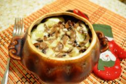

Рецепт швидкого дієтичного печива
Рецепт швидкого дієтичного печива
Набридло їсти несмачні хлібці, але хочеться зберегти фігуру
Їх можна замінити легким вівсяним печивом домашнього приготування
Компоненти:

- Вівсяні пластівці – 200 г;
- Масло рослинне – 3 ст. л.;
- Цукор – 3 ст. л.;
- Яйця – 2 шт.;
- Молоко або кефір нежирний – 100 мл;
- Ванілін – на розсуд кулінара
Заливаємо вівсяні пластівці теплим молоком або кефіром.
Залишаємо розбухати на півгодини. Домішуємо яйця, масло рослинне і цукор.
Тісто виходить негустим, тому викладати його краще великою ложкою.
У вівсяне тісто можна додати зерна льону або насіння гарбуза
Випікати 15 хвилин при 185 °С
Джерело рецепту:
LINK